--------点击蓝字关注我--------
微信号：gaoxiaomao88
--------点击蓝字关注我--------
微信号：gaoxiaomao88
在美国，绝大部分的厕所的马桶盖都是最简洁的那种样式，并没有被改造成那种喷水+烘干的马桶盖。前几年回国的时候，发现家里装了一个，尝试了一下感觉很舒服。我有点心动，但是感觉美国的人工成本很高，装一个估计很贵，因此迟迟没有下手。
后来去年回国的时候，跟爸妈聊起想装一个试试，我爸说这个东西的安装其实很简单的。于是我就想索性买一个回来试试手。
经过一番google和知乎上的调研，我挑中了一个总体评价还不错的日式马桶盖。在Amazon上找到相关的型号以后，发现有人说安装大概只要20分钟，于是我就在amazon上面下单了。一直到这里我心里还是有些忐忑的，因为不知道这个马桶是不是可以适配我们这里的水管之类的接口。
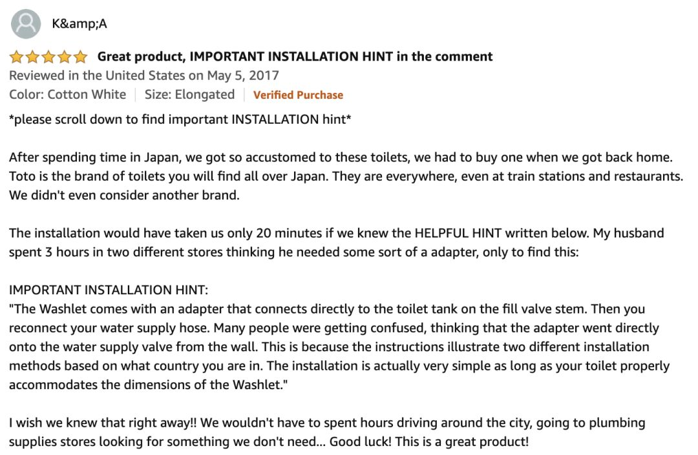
我买的是Toto SW2034 C100这个型号的，具体亚型号是Elongated。后来装的时候我才意识到家里的马桶相对来说有点短，说不定买Round那一款的会更加合适一点。
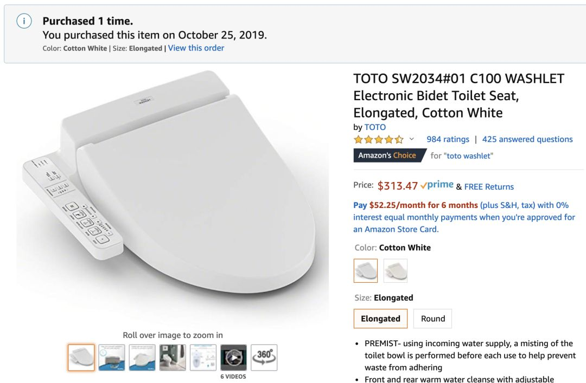
马桶盖运到的时候装在一个超级大的箱子里面，重量倒是还好，不是特别重。箱子里面大部分的体积被那个马桶盖占满了，除此以外还有两个小的配件。
一个配件是一个类似于塑料板的东西，用来把喷水马桶盖固定在马桶座上，另外一个配件是一个水流的转接头，用来把一部分水接给马桶盖用来喷水。
接下来讲讲安装步骤。
安装的时候首先把原来的马桶盖拆掉，然后把那个塑料板塞入原来马桶盖所在的两个洞，大概类似于下图这样。
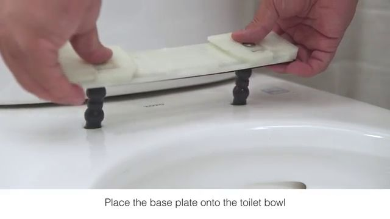
拧上螺丝，拧的过程中那个塑料板下面黑黑的橡胶螺丝一样的东西会团起来，就把这块塑料板固定住了。
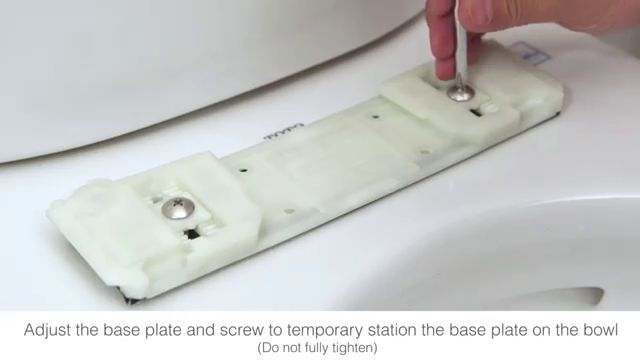
然后把马桶盖向上推入塑料板，马桶盖会嵌入塑料板中。
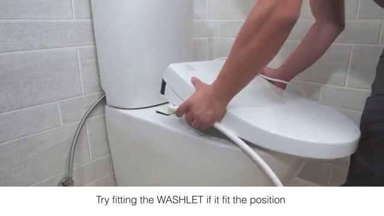
下一步接水，先把马桶原来的出水口拧上，然后把上面的管子拧下来。
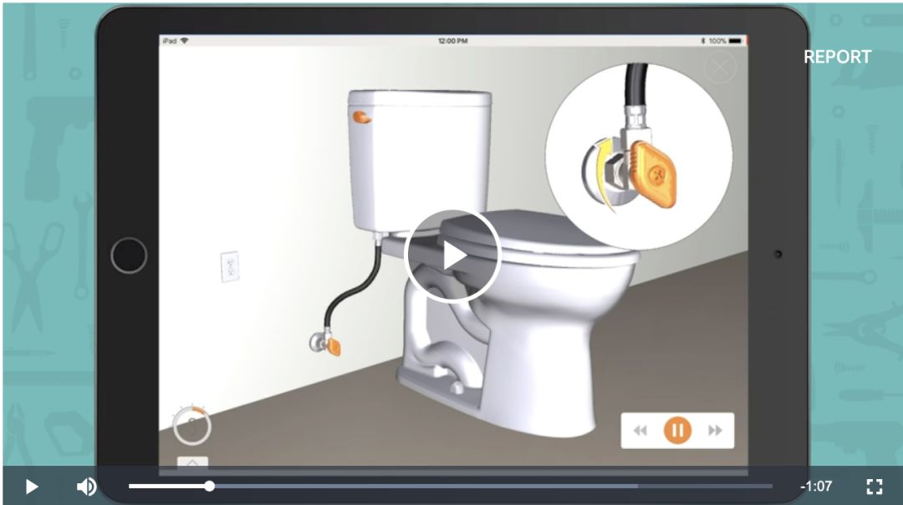
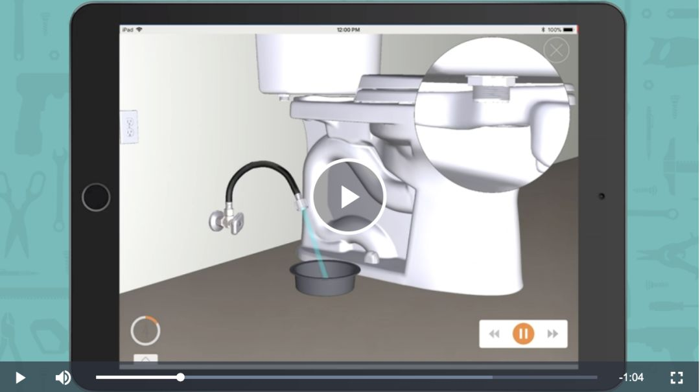
然后往这个空出来的口子上装上箱子里的另外一个三头的配件，注意这边要按照视频里的样子装上垫片，不然会漏水。
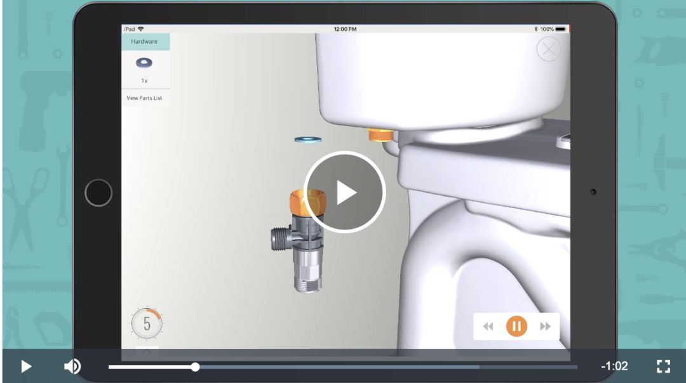
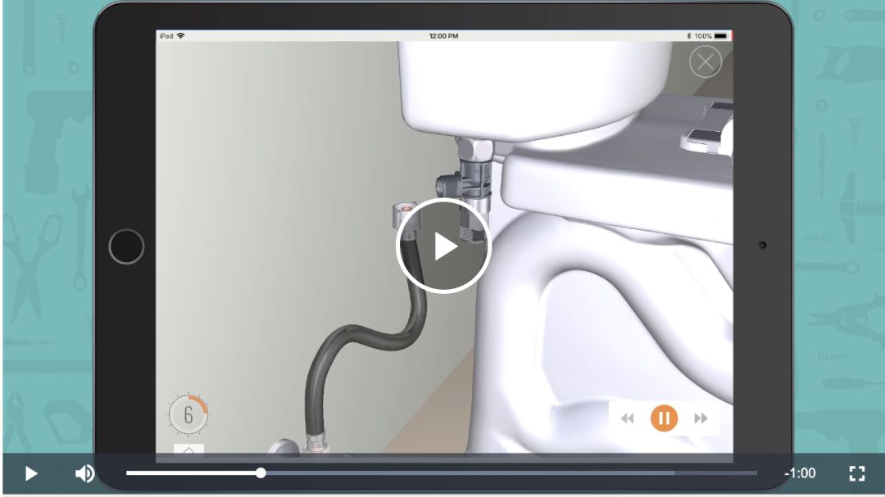
接下来把前面拧下来的管子装上这个三头的下面那个头，注意里面有个东西不要漏掉了。
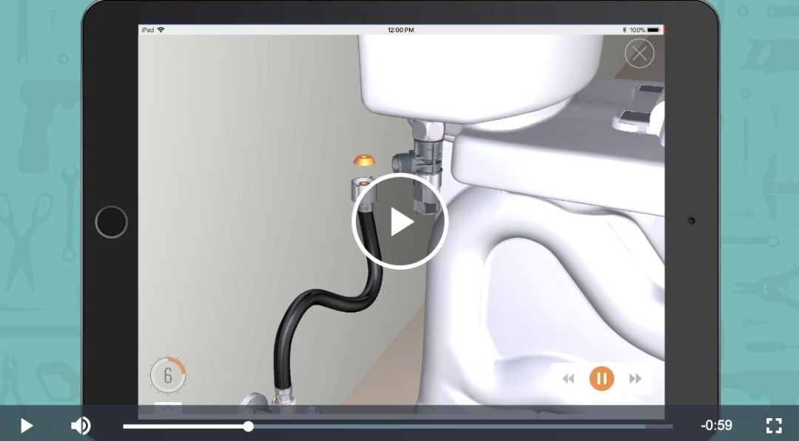
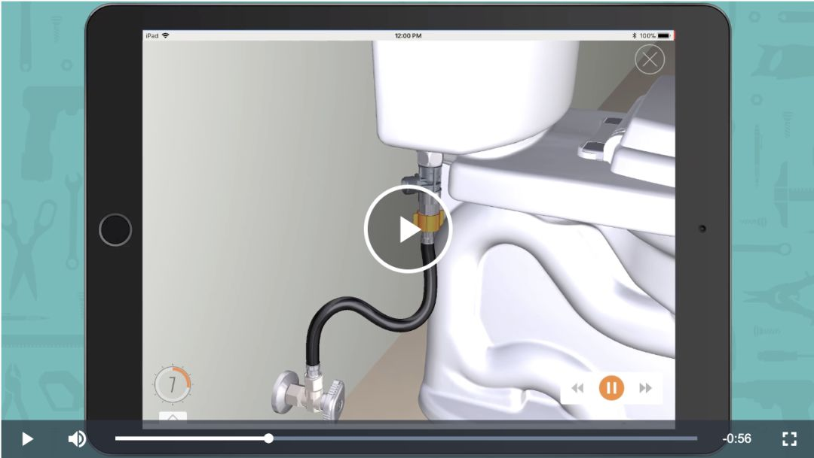
最后把上面的那个螺母紧一下。这边要用的力气比较大，我一开始因为扳手不是特别匹配，死活没有拧紧，一直在漏水，甚至都以为这个东西不好用准备退货了。不过后来在反复尝试之后，终于把它拧紧不漏水了。
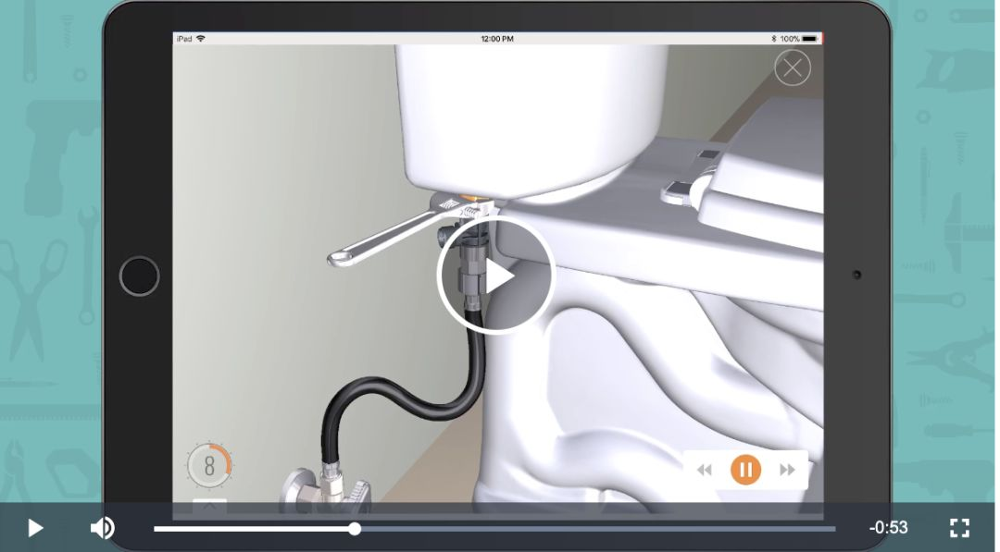
最后把马桶盖这边的水管接上，接下来就可以把水阀重新打开，看看漏不漏水了。如果不漏水就基本大功告成了~
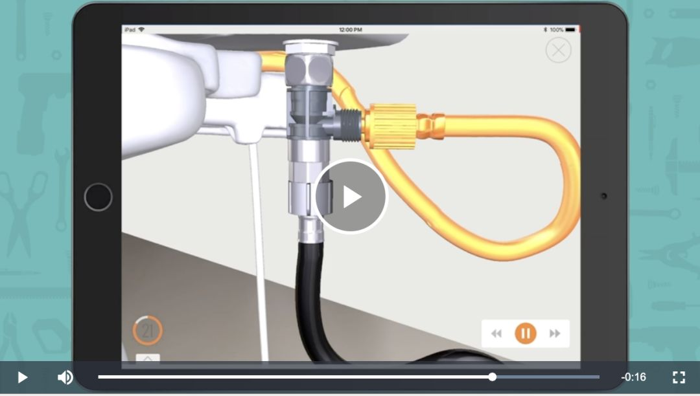
最后最简单的一步，把电源接上。
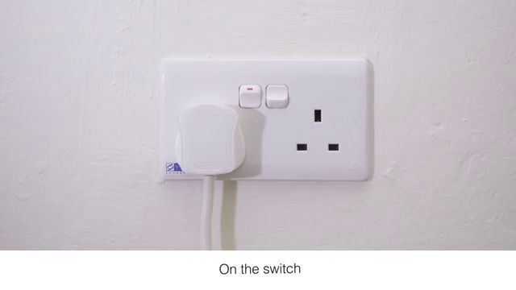
然后就可以试试看马桶是不是喷水了。注意不要直接按按钮，不然水就会直接喷到地方，最好用手或者屁股挡一下。
我个人大概折腾了1个多小时装完的，主要是在那个拧紧螺母的地方卡了好久，不然20分钟应该可以搞定。大家安装前一定要准备好2把可调节的扳手，分别固定住被拧的两端，这样比较好拧。
还有Amazon上面那个BILT Install Demo那个视频做得很好，强烈推荐看一下，要比直接看说明书有用的多。
喷水马桶真的比不喷水的爽多了，还可以暖屁股~只要300多刀，太划算了，强烈推荐。有钱的同学还可以买更加高级的。我的这个只能喷水，烘干，除臭，座椅加热。高级的似乎可以喷热水，自动开关盖，脉冲式喷水等等，说不定更加爽，有钱的主儿可以试试。
嘛今天的文章就到这儿了，欢迎大家点评，也可以说说你自己的尝试心得。